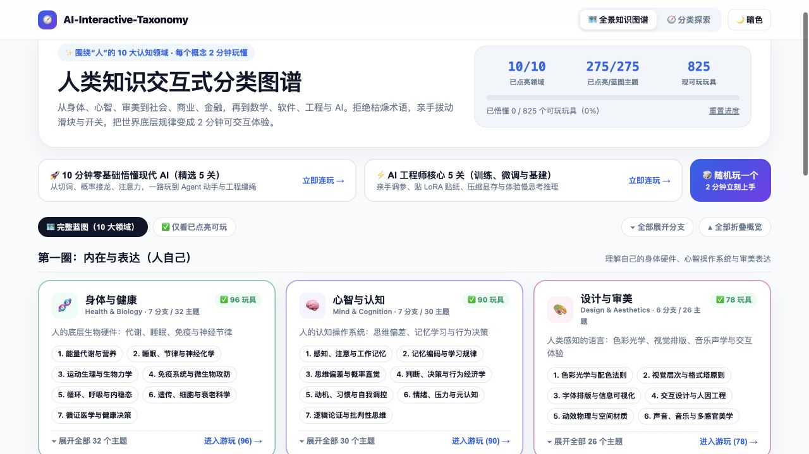

网站 / 互动学习
人类知识交互式分类图谱
围绕人的跨学科探索
从身体、心智和审美，到社会、商业、科学与 AI，用交互玩具探索十个知识领域。

这是什么
以“人”为圆心，把知识组织成内在与表达、协作与价值、科学与构建三个圈层。既可以从全景图谱展开领域和分支，也可以切换分类探索，搜索主题、进入站内互动体验，并记录自己的探索进度。
核心功能
- 十个核心领域，按三个同心圈层组织知识与分支
- 全景知识图谱与分类探索双视图，可展开或折叠主题
- 用滑块、开关与可视化反馈体验抽象机制
- 精选 AI 连玩路线、随机探索与站内沉浸试玩
- 主题搜索、亮暗主题切换与本地探索进度保存
界面截图